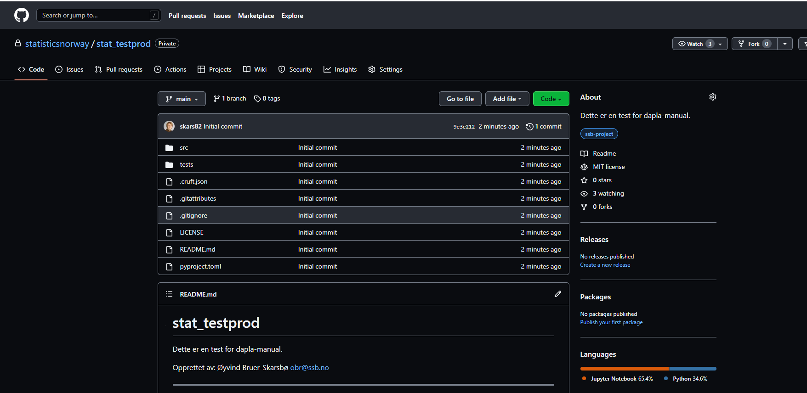
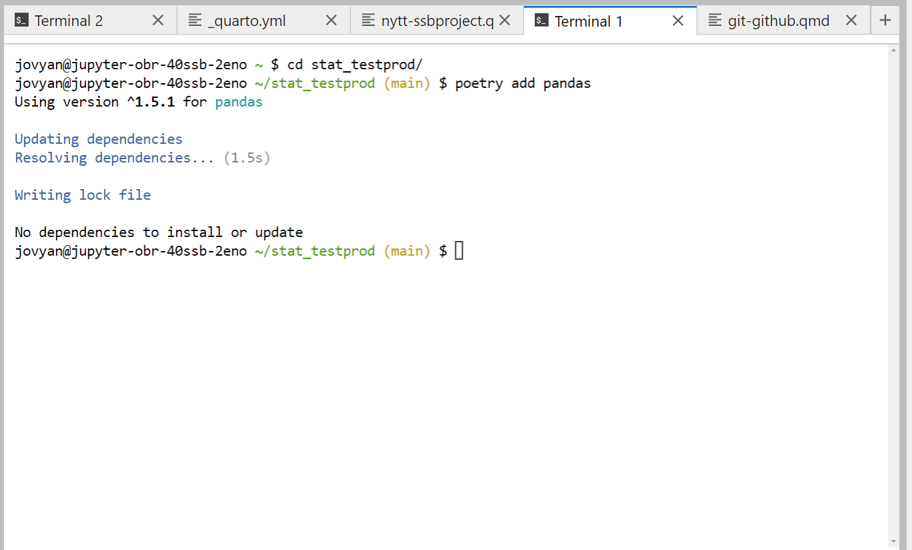
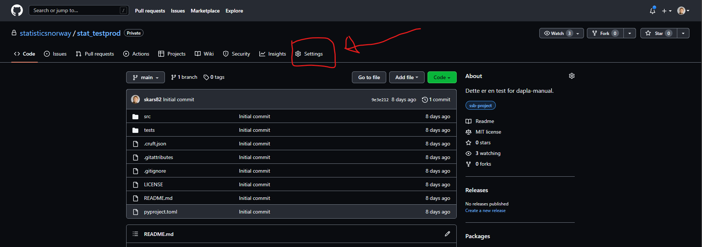

Jobbe med kode
SSB-project
I forrige del forklarte vi hvordan man jobber med skarpe data på Dapla. Det neste steget vil ofte være å begynne å utvikle kode i Python og/eller R. Dette innebærer at man helst skal:
- versjonshåndtere med Git
- opprette et GitHub-repo
- opprette et virtuelt miljø som husker hvilke versjoner av pakker og programmeringsspråk du brukte
I tillegg må alt dette konfigureres for hvordan SSB sine systemer er satt opp. Dette har vist seg å være unødvendig krevende for mange. Team Statistikktjenester har derfor utviklet et program som gjør alt dette for deg på en enkel måte som heter ssb-project.
Vi mener at ssb-project er et naturlig sted å starte når man skal bygge opp koden i Python eller R. Det gjelder både på bakken og på sky. I denne delen av boken forklarer vi først hvordan du bruker ssb-project i det første kapittelet. Siden programmet skjuler mye av kompleksiteten rundt dette, så bruker vi de andre kapitlene til å forklare hvordan man ville satt opp dette uten hjelp av programmet. Dermed vil det være lett for SSB-ansatte å skjønne hva som gjøres og hvorfor det er nødvendig.
I dette kapittelet forklarer vi hvordan du oppretter et ssb-project og hva det innebærer. ssb-project er et CLI1 for å raskt komme i gang med koding på Dapla, hvor en del SSB-spesifikke beste-prakiser er ivaretatt. Kode som naturlig hører sammen, f.eks. koden til et produksjonsløp for en statistikk, er målgruppen for dette programmet. Kort fortalt kan du kjøre denne kommandoen i en terminal
ssb-project create stat-testprodog du vil få en mappe som heter stat-testprod med følgende innhold:
- Standard mappestruktur En standard mappestruktur gjør det lettere å dele og samarbeide om kode, som igjen reduserer sårbarheten knyttet til at få personer kjenner koden.
- Virtuelt miljø Virtuelle miljøer isolerer og lagrer informasjon knyttet til kode. For eksempel hvilken versjon av Python du bruker og tilhørende pakkeversjoner. Det er viktig for at publiserte tall skal være reproduserbare. Verktøyet for å lage virtuelt miljø er Poetry.
- Versjonshåndtering med Git Initierer versjonshåndtering med Git og legger til SSBs anbefalte .gitignore og .gitattributes. Det sikrer at du ikke versjonhåndterer filer/informasjon som ikke skal versjonshåndteres.
I tillegg lar ssb-project deg opprette et GitHub-repo hvis du ønsker. Les mer om hvordan du kan ta i bruk dette verktøyet under.
Dokumentasjonen for ssb-project finnes her: https://statisticsnorway.github.io/ssb-project-cli/. Det oppdateres hver gang en ny versjon av ssb-project slippes.
Forberedelser
Før du kan ta i bruk ssb-project så er det et par ting som må være på plass:
- Du må ha opprettet en git-bruker og git-epost lokalt der du skal kalle på programmet (les mer om hvordan her).
- Hvis du ønsker at ssb-project også skal opprette et GitHub-repo for deg må du også følgende være på plass:
- Du må ha en GitHub-bruker (les hvordan her)
- Skru på 2-faktor autentifisering for GitHub-brukeren din (les hvordan her)
- Være koblet mot SSBs organisasjon statisticsnorway på GitHub (les hvordan her)
- Opprette Personal Access Token (PAT) og godkjenne det for bruk mot statisticsnorway (les hvordan her)
Det er også å anbefale at du lagrer PAT lokalt slik at du ikke trenger å forholde deg til det når jobber med Git og GitHub. Hvis du har alt dette på plass så kan du bare fortsette å følge de neste kapitlene.
Opprett ssb-project
Har du Github bruker? Noe funksjonalitet i ssb-project krever det. Finn ut hvordan ved å lese forrige kapittel.
ssb-project lar deg opprette en prosjekt-mappe med og uten GitHub-repo. La oss ta for oss hver av alternativene.
Uten GitHub-repo
For å opprette et nytt ssb-project uten GitHub-repo gjør du følgende:
Åpne en terminal. De fleste vil gjøre dette i Jupyterlab på bakke eller sky og da kan de bare trykke på det blå ➕-tegnet i Jupyterlab og velge Terminal.
Før vi kjører programmet må vi være obs på at ssb-project vil opprette en ny mappe der vi står. Gå derfor til den mappen du ønsker å ha den nye prosjektmappen. For å opprette et prosjekt som heter stat-testprod så skriver du følgende i terminalen:
ssb-project create stat-testprodHvis du stod i hjemmemappen din på når du skrev inn kommandoen over i terminalen, så har du fått mappestrukturen som vises i Figur 1. 2. Den inneholder følgende :
- .git-mappe som blir opprettet for å versjonshåndtere med Git.
- src-mappe som skal inneholde all koden som utgjør produksjonsløpet.
- tests-mappe som inneholder tester du skriver for koden din.
- LICENCE-fil som skal benyttes for public-repos i SSB.
- poetry.lock-fil som inneholder alle versjoner av Python-pakker som blir brukt.
- README.md-fil som brukes for tekstlig innhold på GitHub-siden for prosjektet.

Med Github-repo
Over så opprettet vi et ssb-project uten å opprette et GitHub-repo. Hvis du ønsker å opprette et GitHub-repo også må du endre kommandoen over til:
ssb-project create stat-testprod --github --github-token='blablabla'Kommandoen over oppretter en mappestruktur slik vi så tidligere, men også et ssb-project som heter stat-testprod med et GitHub-repo med samme navn. Som du ser så må vi da sende med opsjonen --github og PAT med opsjonen --github-token='blablabla'. Repoet i GitHub ser da ut som i Figur 2.

Når du har opprettet et nytt ssb-project, eller bygget et eksisterende prosjekt, så kan det ta rundt 30 sekunder før kernelen viser seg i Jupterlab-launcher. Vær tålmodig!
Installere pakker
Når du har opprettet et ssb-project så kan du installere de python-pakkene du trenger fra PyPI. Hvis du for eksempel ønsker å installere Pandas, et populært data wrangling bibliotek, så kan du gjøre følgende:
- Åpne en terminal i Jupyterlab.
- Gå inn i prosjektmappen din ved å skrive
cd <sti til prosjektmappe>- Lag en branch/utviklingsbranch som f.eks. heter install-pandas:
git checkout -b install-pandas- Installer Pandas ved å skrive følgende
poetry add pandas
Figur 3 viser hvordan dette vil se ut i en Jupyterlab-terminal. Kommandoen for å installere noe er poetry add etterfulgt av pakkenavnet. Vi ser også at den automatisk legger til Pandas-versjonen i filen poetry.lock. Les mer om hvordan man installerer pakker her.
Push til GitHub
Når du nå har installert en pakke så har filen poetry.lock endret seg. La oss for eksempelets skyld anta at du ønsker å bruke Git til å dokumentere denne hendelsen, og dele det med en kollega via GitHub. Hvis vi har opprettet et ssb-project med et GitHub-repo så kan vi gjøre akkurat dette:
- Vi kan stage alle endringer med følgende kommando i terminalen når vi står i prosjektmappen:
git add -A- Videre kan commit en endring, dvs. ta et stillbilde av koden i dette øyeblikket, ved å skrive følgende:
git commit -m "Installert pandas"- Push det opp til GitHub3. Anta at vi gjorde dette i branchen install-pandas som ble opprettet tidligere. Da kan vi skrive følgende:
git push --set-upstream origin install-pandasMer kommer her.
Bygg eksisterende ssb-project
Når vi skal samarbeide med andre om kode så gjør vi dette via GitHub. Når du pusher koden din til GitHub, så kan samarbeidspartnere pulle ned koden og jobbe videre med den. Men når de henter ned koden så vil de bare hente ned selve koden, ikke pakker og Python-versjonen som ble brukt. De må installere alt som du hadde installert. I tillegg trenger de en kernel hvis de skal jobbe i Jupyterlab. ssb-project gjør det svært enkelt å bygge opp det du trenger, siden det virtuelle miljøet har all informasjon om hva som trengs.
For at samarbeidspartneren din skal kunne bygge miljøet på nytt, må de ha gjort en minimal konfigurering av Git. Les mer om hvordan du frem for å gjøre dette her.
For å bygge opp et eksisterende miljø gjør du følgende:
- Først må du kopiere prosjektet ned lokalt, eller klone repoet med git-terminologi
git clone https://github.com/statisticsnorway/<prosjektnavn>- Gå inn i mappen du klonet
cd <prosjektnavn>- Skape et virtuelt miljø og installere en tilsvarende Jupyter kernel med
ssb-project buildRydd opp etter deg
Det vil være tilfeller hvor man ønsker å slette et ssb-project, enten fordi man ikke trenger koden lenger eller fordi man bare testet litt.
Lokalt
Hvis man jobber med flere prosjekter så kan det fort bli mange Jupyter kerneler hengende igjen. Derfor er det også mulighet å kjøre
ssb-project clean stat-testprodsom sletter Jupyter-kernelen og de installerte pakkene i prosjektet. Hvis du også ønsker å slette selve mappen med kode må du gjøre det manuelt4:
rm -rf ~/stat-testprod/Prosjektmappen over lå direkte i hjemmemappen min og hjemmemappen på Linux kan alltid referes til med et tilda-tegn ~.
Arkiver GitHub-repo
GitHub-repoer som er opprettet under SSB sin organinasjons statisticsnorway på GitHub kan ikke slettes, bare arkiveres. Grunnen er at hvis man oppdager en sårbarhet senere så er det viktig å kunne se repoet for å forstå hva som har skjedd.
Hvis du ikke trenger et GitHub-repo lenger kan man arkivere repoet. Det gjør du på følgende måte:
- Gi inn i repoet Settings slik som vist med rød pil i Figur 4.

- Under General scroller du deg ned til delen som heter Danger Zone og velger Archive this repository, slik som vist på Figur 5.

- I dialogboksen som dukker opp fyller du inn reponavnet som beskrevet og trykker på I understand the consequences, archive this repository, som vist i Figur 6.

Når det er gjort så er repoet lesbart, men man kan ikke jobbe med det. Men som vi ser av @#fig-github-repo-settings-archive-warning kan man omgjøre arkiveringen senere hvis det skulle være ønskelig.
Hva med R?
Vi har foreløpig ikke integret R i ssb-project. Grunnen er at det mest populære virtuelle miljø-verktøet for R, renv, kun tilbyr å passe på versjoner av R-pakker og ikke selve R-installasjonen. Det er en svakhet som trolig gjør det vanskeligere enn nødvendig å gjenskape tidligere publiserte resultater med ssb-project. I tillegg klarer den ikke å gjenkjenne pakker som blir brukt i ipynb-filer.
Planen er å finne et annet verktøy enn renv som kan også reprodusere R-versjonen. Team Statistikktjenester ser nærmere på hvilke alternativer som finnes og vil tilby noe i fremtiden.
I mellomtiden kan man bruke renv slik det er beskrevet her for skymiljøet, og med denne modifiseringen for bakkemiljøet.
Fotnoter
CLI = Command-Line-Interface. Dvs. et program som er skrevet for å brukes terminalen ved hjelp av enkle kommandoer.↩︎
Filer og mapper som starter med punktum er skjulte med mindre man ber om å se dem. I Jupyterlab kan disse vises i filutforskeren ved å velge View fra menylinjen, og deretter velge Show hidden files. I en terminal skriver man
ls -afor å se de.↩︎Å pushe til GitHub uten å sende ved Personal Access Token fordrer at du har lagret det lokalt så Git kan finne det. Her et eksempel på hvordan det kan gjøres.↩︎
Dette kan også gjøres ved å høyreklikke på mappen i Jupyterlab sin filutforsker og velge Delete.↩︎